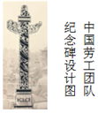
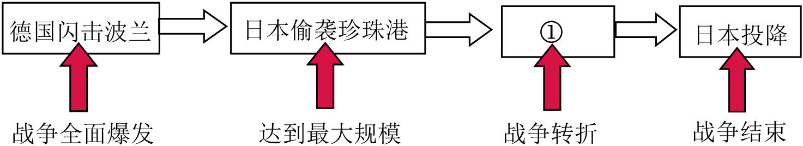

2018年北京市中考历史试题 · 选择题 第26、27、28、29、30题 · 对应解析
26．（3分）2018年9月，图中的纪念碑将在伦敦落成，以纪念十几万中国劳工，他们在100年前支援协约国取得了一场战争的胜利。这场战争是（ ）

A．英国内战B．拉丁美洲独立战
C．印度民族大起义D．第一次世界大战
【分析】本题以2018年9月，图中的纪念碑将在伦敦落成，以纪念十几万中国劳工，他们在100年前支援协约国取得了一场战争的胜利为切入点，考查第一次世界大战的相关知识。
【解答】从2018年算起，往前推100年，就是1918年。再由材料“伦敦”“中国劳工”“协约国”可知这场战争是“第一次世界大战”。
故选：D。
【点评】注意对材料信息的提取，识记第一次世界大战的相关知识。
27．（3分）1933年美国政府颁布法规，规定工人的工作时数为每周35小时，最低工资为每小时0.4美元。与这一法规相关的是（ ）
A．战时共产主义政策B．罗斯福新政
C．马歇尔计划D．杜鲁门主义
【分析】本题以1933年美国政府颁布法规，规定工人的工作时数为每周35小时，最低工资为每小时0.4美元。与这一法规相关的是为依托，考查第二次世界大战的知识点。注意掌握相关基础知识。
【解答】1933年，罗斯福就任美国总统，开始实行新政，通过加强国家对经济的干预和指导，以消除经济危机。由材料中的“1933年”“美国政府”“工人“”等信息，可以得出为罗斯福新政。
故选：B。
【点评】本题主要考查学生的识记能力以及分析问题的能力。识记与灵活掌握罗斯福新政的背景、中心措施、特点以及影响和启示。
28．（3分）如图示意图呈现了第二次世界大战的主要进程，①处应是（ ）

A．莫斯科保卫战B．斯大林格勒战役
C．诺曼底登陆D．德国无条件投降
【分析】本题考查第二次世界大战，知道斯大林格勒战役是第二次世界大战的重要转折点。
【解答】1942年7月至1943年2月，苏军在斯大林格勒与德军展开了激烈的争夺，最终苏军取得胜利。斯大林格勒战役成为第二次世界大战的重要转折点。对应示意图，第二次世界大战的主要进程①应为斯大林格勒战役。
故选：B。
【点评】本题主要考查学生的识记能力以及分析问题的能力。识记与灵活掌握第二次世界大战重大事件以及影响。
29．（3分）某历史公众号准备推送一期专题亚非拉国家民族独立和振兴。下列各项可以放进专题资源包的是（ ）
①论文：《民族认同与德国的重新统一》
②图片：《纳米比亚独立》
③地图：《巴拿马收回运河主权的斗争》
④视频：《苏联的改革》
A．①③B．③④C．②③D．②④
【分析】本题考查了亚非拉国家民族独立和振兴，注意题目强调的地区范围。
【解答】“德国的重新统一”和“苏联的改革”都发生在欧洲，不属于亚非拉国家，据此可排除ABD三个选项。“纳米比亚独立”“巴拿马收回运河主权的斗争”均为亚非拉国家独立和振兴的重大事件。
故选：C。
【点评】本题主要考查学生对历史知识的灵活运用能力，需要灵活运用相关国家所处的大洲。
30．（3分）习近平主席在2018年上合青岛会上说：“各国只有加强团结协作，深化和平合作、平等相待、开放包容、共赢共享的伙伴关系，才能实现持久稳定和发展。”以下史实中能印证这一观点的是（ ）
①萨拉热窝事件
②北约、华约对峙
③欧盟的建立和发展
④中国加入世界贸易组织
A．①②B．③④C．①③D．②④
【分析】本题考查了各国加强团结协作的事件，可用排除法解答。
【解答】由材料可知，习近平主席讲话的重要关键词是“团结协作”“稳定和发展”“萨拉热窝事件”是一战的导火线，“北约、华约对峙”是军事集团对峙，威胁世界和平与安全，不符合习主库讲话的主旨，排除ACD三个选项。
故选：B。
【点评】组合选择题一般排除一个错误内容即可获取正确答案，部分题目需要经过两次排除，但有一小部分题目所有内容都正确。
二、解答题（共4小题，满分45分）